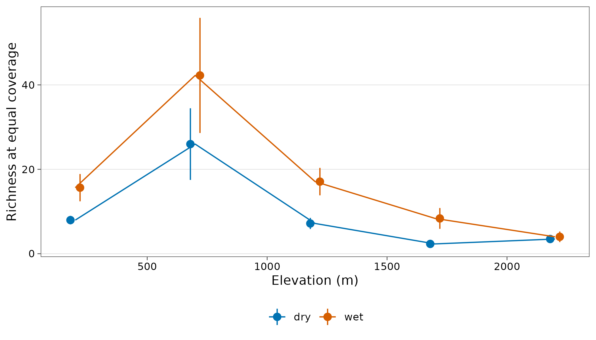
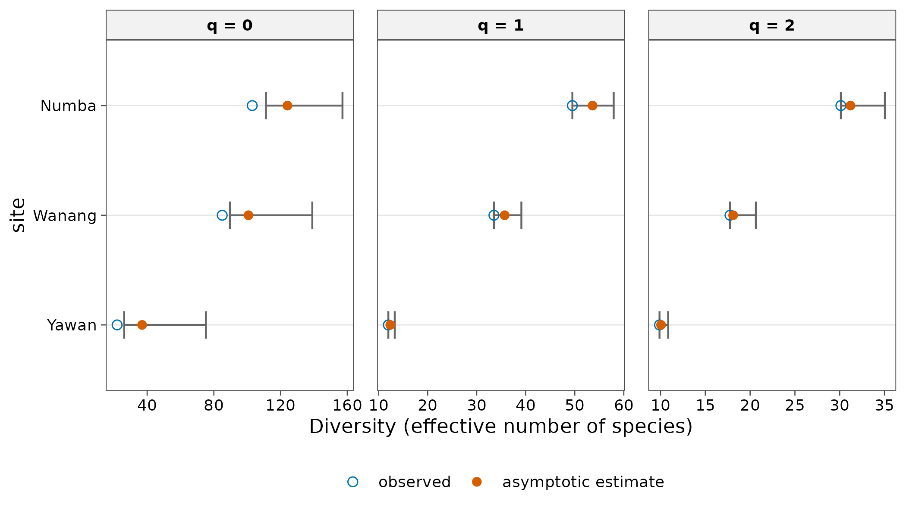

Case study: ants along Mt Wilhelm and in rainforest canopies
Source:vignettes/articles/case-png-ants.Rmd
case-png-ants.RmdTwo Papua New Guinea ant datasets show tidydiversity on incidence-type and nest-count data.
Sources and licences. png_ants: Moses
et al. (2023), data deposited on Zenodo (doi:10.5281/zenodo.8191946)
and included with the lead author’s permission.
png_tree_ants: Plowman et al. (2020), data on Dryad (doi:10.5061/dryad.2fqz612k6)
under CC0 1.0. See ?png_ants, ?png_tree_ants
and data-raw/ for how each was built.
Ground ants at baits along Mt Wilhelm
Baits were set at eight elevations from 200 to 3700 m in the dry and
the wet season. Worker counts at a bait reflect recruitment, so each
species at a bait counts as one occurrence (the default when the data
have no abundance column).
png_ants
#> # A tibble: 369 × 12
#> site elevation season transect bait baits bait_type species genus subfamily
#> <chr> <int> <chr> <int> <chr> <int> <chr> <chr> <chr> <chr>
#> 1 MW02… 200 dry 1 200_… 60 cho lepm_0… Lept… Dolichod…
#> 2 MW02… 200 dry 1 200_… 60 cho mono_0… Mono… Myrmicin…
#> 3 MW02… 200 dry 1 200_… 60 lipid phei_0… Phei… Myrmicin…
#> 4 MW02… 200 dry 1 200_… 60 lipid tetr_0… Tetr… Myrmicin…
#> 5 MW02… 200 dry 1 200_… 60 amino_ac… crem_0… Crem… Myrmicin…
#> 6 MW02… 200 dry 1 200_… 60 cho_amin… crem_0… Crem… Myrmicin…
#> 7 MW02… 200 dry 1 200_… 60 lipid crem_0… Crem… Myrmicin…
#> 8 MW02… 200 dry 1 200_… 60 cho crem_0… Crem… Myrmicin…
#> 9 MW02… 200 dry 1 200_… 60 cho_amin… rhyt_0… Rhyt… Ectatomm…
#> 10 MW02… 200 dry 1 200_… 60 cho crem_0… Crem… Myrmicin…
#> # ℹ 359 more rows
#> # ℹ 2 more variables: guild <chr>, workers <int>
div_coverage(png_ants, .by = season)
#> # A tibble: 10 × 7
#> season site n s_obs f1 f2 coverage
#> <chr> <chr> <dbl> <int> <int> <int> <dbl>
#> 1 dry MW0200 47 16 5 5 0.898
#> 2 dry MW0700 23 15 12 1 0.482
#> 3 dry MW1200 29 13 7 3 0.766
#> 4 dry MW1700 17 5 1 2 0.953
#> 5 dry MW2200 13 6 3 1 0.781
#> 6 wet MW0200 76 21 11 5 0.857
#> 7 wet MW0700 58 28 17 3 0.709
#> 8 wet MW1200 57 20 9 3 0.844
#> 9 wet MW1700 34 10 6 2 0.827
#> 10 wet MW2200 15 5 2 1 0.876Coverage differs between seasons and sites, so compare richness at equal coverage:
std <- div_standardise(png_ants, q = 0, .by = season, nboot = 100) |>
add_site_data(distinct(png_ants, site, elevation))
ggplot(std, aes(elevation, diversity, colour = season)) +
geom_pointrange(aes(ymin = lower, ymax = upper),
position = position_dodge(width = 80)
) +
geom_line() +
scale_colour_tidydiversity() +
labs(x = "Elevation (m)", y = "Richness at equal coverage", colour = NULL) +
theme_tidydiversity()
Both seasons cover the same five elevations, 200 to 2200 m (a single
dry-season record at 2700 m is left out of png_ants to keep
the seasons comparable). Richness peaks at low to mid elevation and
falls sharply above 1700 m.
Tree-nesting ants in three forest plots
png_tree_ants lists every ant nest in 1254 trees in
plots at Wanang (200 m), Numba (900 m) and Yawan (1800 m). Using the
number of nests as the abundance and pooling trees within each plot:
est <- div_estimate(png_tree_ants, abundance = nests, nboot = 100)
est
#> # A tibble: 9 × 7
#> site q observed estimate se lower upper
#> <chr> <dbl> <dbl> <dbl> <dbl> <dbl> <dbl>
#> 1 Numba 0 103 124. 10.8 111. 157.
#> 2 Numba 1 49.5 53.6 2.20 49.5 57.9
#> 3 Numba 2 30.1 31.2 1.96 30.1 35.0
#> 4 Wanang 0 85 101. 11.0 89.6 139.
#> 5 Wanang 1 33.5 35.7 1.74 33.5 39.1
#> 6 Wanang 2 17.8 18.1 1.29 17.8 20.6
#> 7 Yawan 0 22 37.0 10.8 26.2 75.2
#> 8 Yawan 1 12.0 12.4 0.462 12.0 13.3
#> 9 Yawan 2 9.89 10.1 0.404 9.89 10.8
autoplot(est)
Diversity of every order peaks at mid elevation (Numba), as Plowman et al. (2020) reported. Estimated richness at Yawan has a wide interval because many species there were found only once.
Treating each tree as a site, almost all dissimilarity between trees is turnover rather than nestedness:
beta_multi(png_tree_ants, site = tree, .by = site)
#> # A tibble: 3 × 5
#> site n_sites turnover nestedness total
#> <chr> <int> <dbl> <dbl> <dbl>
#> 1 Numba 224 0.986 0.00573 0.992
#> 2 Wanang 326 0.991 0.00346 0.994
#> 3 Yawan 219 0.984 0.00570 0.990References
Moses, J., Peters, M. K., Tiede, Y., Mottl, O., Donoso, D. A., Farwig, N., Fayle, T. M., Novotny, V., Sanders, N. J. and Klimes, P. (2023). Nutrient use by tropical ant communities varies among three extensive elevational gradients: a cross-continental comparison. Global Ecology and Biogeography, 32, 2212-2229. doi:10.1111/geb.13757
Plowman, N. S., Mottl, O., Novotny, V., Idigel, C., Philip, F. J., Rimandai, M. and Klimes, P. (2020). Nest microhabitats and tree size mediate shifts in ant community structure across elevation in tropical rainforest canopies. Ecography, 43, 431-442. doi:10.1111/ecog.04730